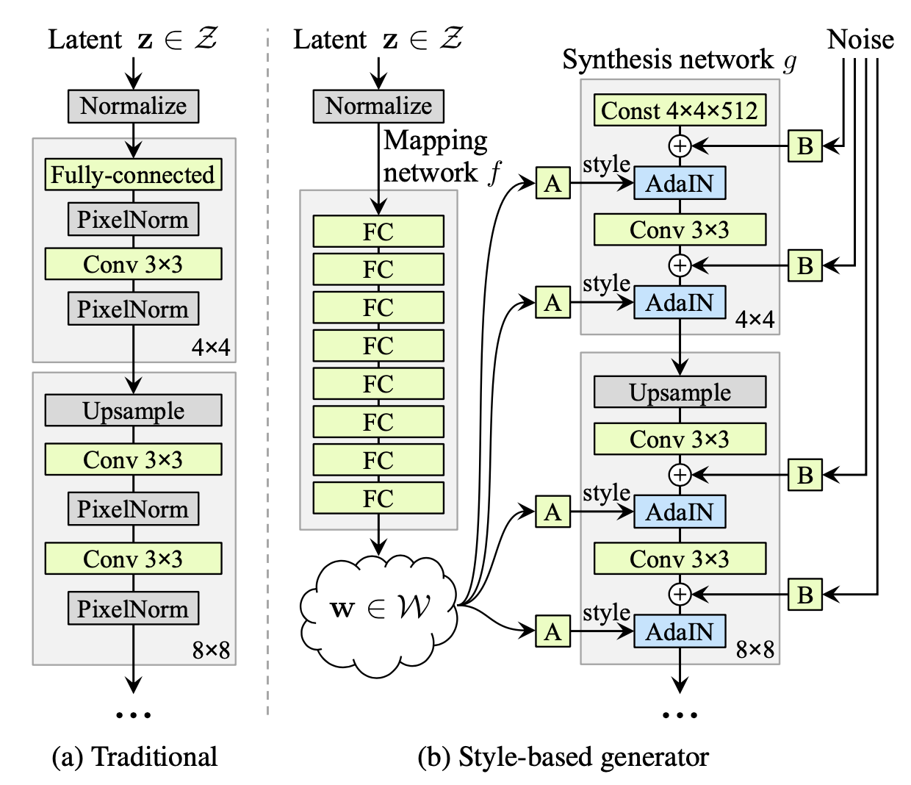
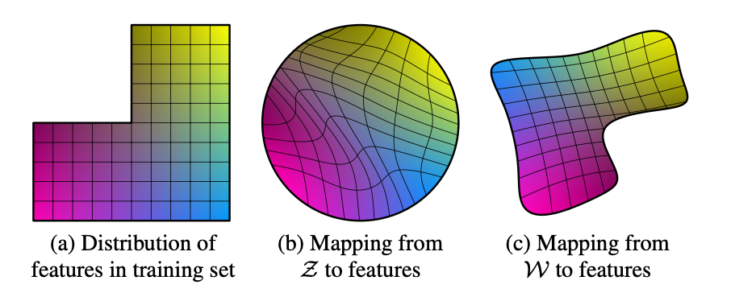
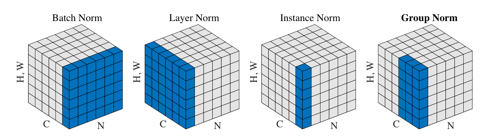
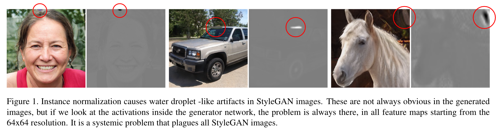
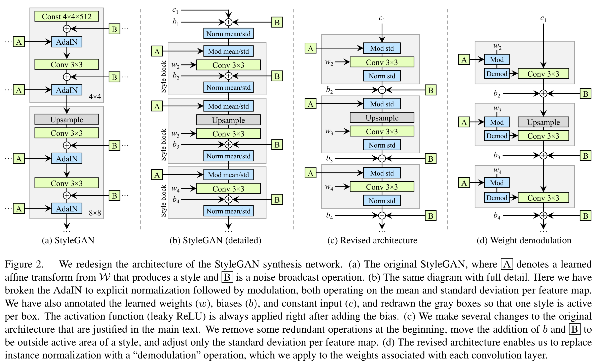
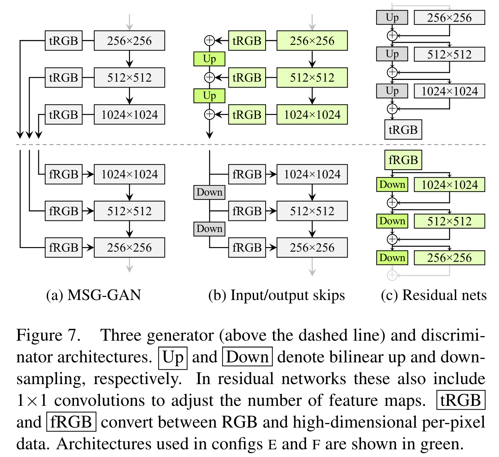
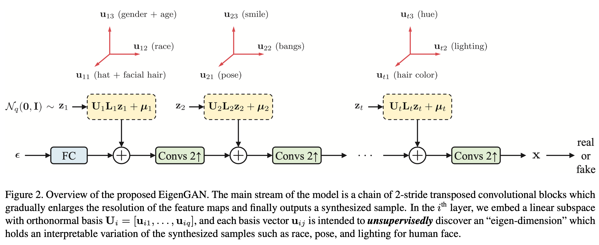
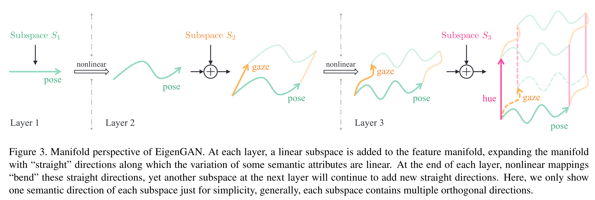
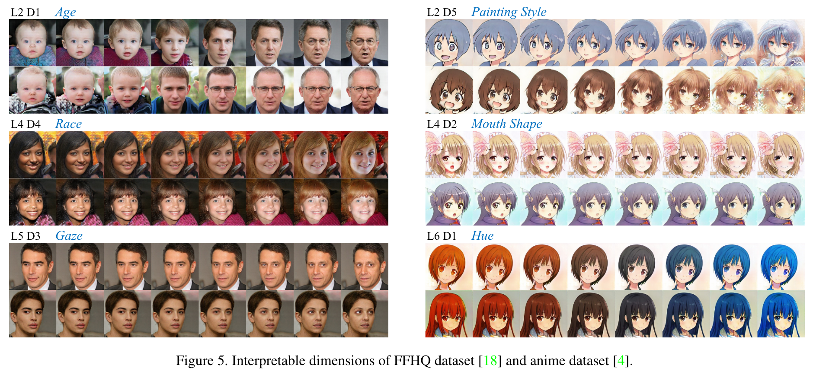

StyleGAN 系列
StyleGAN
如果要说 StyleGAN 的最大的贡献，无疑是改变了传统的生成器架构，通过把隐变量分层引入到 backbone 网络，揭示了网络的各层能够控制生成图像的不同抽象程度的语义，从而在一定程度上实现了无监督特征解耦。另外，作者提出的 FFHQ 数据集也是一个很大的贡献，在之后的生成模型研究乃至 low-level vision 领域中都经常用到。
网络架构设计

在 StyleGAN 以前，传统生成器的网络架构通常如上左图所示——隐变量 \(\mathbf z\) 输入给网络的第一层，经过分辨率逐渐增大网络模块后输出最终结果；而 StyleGAN 将隐变量 \(\mathbf w\) 给到了生成器的各层，网络第一层的输入仅仅是一个（可学习的）常数向量，如上右图所示。这里，有三个问题需要详细说明：
为什么要用一个 mapping network（8 层 MLP）把隐变量 \(z\) 映射成 \(w\)，再给到生成器网络？
一般而言，隐变量 \(\mathbf z\in\mathcal Z\) 采样自标准高斯分布或者均匀分布，这些分布都是各向同性的。然而，图像的属性之间可能并非如此。例如，在头发长度与性别这两个属性的组合之中，长发男子的出现频率较低。极端情况下，也许数据集中并没有长发男子，那么模型为了在各向同性的隐空间中编码这两个属性，势必会引起较大的扭曲，增加学习难度。为此，作者引入 mapping network 对 \(\mathbf z\) 做非线性变换，让模型自己学习一个隐空间 \(\mathcal W\)，那么 \(\mathcal W\) 的扭曲程度就可以得到缓解，如下图所示：

实验证明，mapping network 确实能提高生成图像的质量，也能帮助更好的解耦。
值得注意的是，论文中作者对 \(\mathbf w\) 采用了 truncation trick 来提高可视化的图像质量。而且，受益于 StyleGAN 的设计，我们可以只对低分辨率阶段（\(4^2\sim32^2\)）使用 truncation trick，从而保留高频细节的丰富性。具体而言，由于 \(\mathcal W\) 是学习出来的，我们无法直接对其截断，因此作者首先计算 \(\mathbf w\) 的平均值：\(\bar{\mathbf w}=\mathbb E_{\mathbf z\sim \mathcal P(\mathbf z)}[f(\mathbf z)]\)，然后对于采样出的 \(\mathbf w\)，将其与 \(\bar{\mathbf w}\) 做插值来实现类似于截断的效果：\(\mathbf w'=\bar{\mathbf w}+\psi(\mathbf w-\bar{\mathbf w})\).
\(w\) 是如何融入生成器网络的（即图中的 AdaIN 具体是怎么操作的）？
AdaIN，即 Adaptive InstanceNorm，源自于风格迁移工作，这也是 StyleGAN 名字中 "Style" 的来源。我们首先需要明确 InstanceNorm (IN) 是在哪些维度上做归一化的，这里借用 GroupNorm 论文的图：

可以看到，InstanceNorm 是在每张图片的每个单通道特征图内做归一化的，注意与 LayerNorm 区分开。
回到 StyleGAN，从上文的架构图中可以看到，\(\mathbf w\) 会被复制多份送到生成器网络的各个层次之中。在每个层次里，\(\mathbf w\) 会先经过一个可学习的仿射变换（图中的 A 框，其实就是一个全连接层），得到所谓的“风格” \(\mathbf y\)： \[ \mathbf y=A(\mathbf w)=(\mathbf y_s,\mathbf y_b) \] 其中 \(\mathbf y_s,\mathbf y_b\in\mathbb R^C\)，\(C\) 是当前特征图的通道数。然后以 \(\mathbf y_s\) 为 scale、\(\mathbf y_b\) 为 bias 逐通道调制（modulate）归一化后的结果： \[ \text{AdaIN}(\mathbf x_i,\mathbf y)=\mathbf y_{s,i}\frac{\mathbf x_i−\mu(\mathbf x_i)}{\sigma(\mathbf x_i)}+\mathbf y_{b,i}\quad(\text{for the }i\text{'th channel}) \] 换句话说，就是把原本第 \(i\) 个通道的特征图 \(\mathbf x_i\) 的均值和标准差强行赋值为 \(\mathbf y_{b,i}\) 和 \(\mathbf y_{s,i}\).
最右侧的 noise 是什么？有什么作用？
Noise 的添加是为了给生成的结果引入一些随机微小扰动，这些扰动会改变发丝、皱纹、胡子、毛孔等细节。与 \(\mathbf w\) 不同的是，给到不同层次的 noise 是单独采样、互相独立的。这些 noise 是单通道的高斯噪声，通过可学习的逐通道缩放系数广播（broadcast）为对应特征图的 shape（图中的 B 框），加到卷积后的特征图上。
一个自然的问题是，为什么 noise 不会上升到与 \(\mathbf w\) 一样的地位，大幅度地影响生成结果呢？作者认为，这与风格迁移文献观察到的现象有关——具有空间不变性的统计量，如 Gram 矩阵、逐通道均值、逐通道方差等，能很好地编码一张图片的风格；相反，对空间位置敏感的特征编码具体的实体。在 StyleGAN 中，风格 \(\mathbf y\) 通过 AdaIN 操作调制了特征图的均值和方差，因而能控制生成图像的姿态、光照等全局信息；而 noise 是各像素独立的，因此自然而然地被用来控制局部的随机变化。
Style Mixing
虽然我们现在清楚了 StyleGAN 的设计细节，但更重要的是要明白这样设计的动机，换句话说，StyleGAN 的设计有什么优势？其实在文章开头已经提到了，这样的设计使得不同抽象程度的语义与网络不同层次的隐变量形成了对应关系，在一定程度上实现了特征解耦，我们能够通过控制网络内部的各个层级来控制生成结果的各种语义。
文章用 style mixing 展示了这一点。所谓 style mixing，即随机选择网络的一个层次，在这之前使用 \(\mathbf w_1\)、之后使用 \(\mathbf w_2\)，那么生成的图像就会服从对应于 \(\mathbf w_1\) 的粗糙语义（如人物姿态、发型、是否戴眼镜等）和对应于 \(\mathbf w_2\) 的精细语义（如颜色、一些脸部特征等）。

如上图所示，source A 和 source B 都是 StyleGAN 生成的图片。前三行是在 source A 的基础上，把粗糙层次（\(4^2\sim8^2\)）的 \(\mathbf w\) 换成 source B，于是交叉得到的图片在姿态、发型、脸型、眼镜上与 source B 保持一致，而色调和细节脸部特征像 source A；中间两行是把中间分辨率（\(16^2\sim32^2\)）的 \(\mathbf w\) 换成 source B；最后一行是把精细层次（\(64^2\sim1024^2\)）的 \(\mathbf w\) 换成 source B.
事实上，style mixing 并不只是一个可视化技巧，作者也将其作为一种正则化技巧用在了训练之中并取名为 mixing regularization，以避免网络认为相邻的两个 style 是相关的。
解耦性能指标
我们知道，评价生成模型的常用指标有 FID、Inception Score 等，但对一个生成模型的完整评价不应仅仅关注于结果，还应该关注网络内部的特征表示。一方面，我们希望网络从隐变量到图像的映射是足够“平滑”的，在隐空间中插值能够导致生成图像的平滑变化；另一方面 ，如果能找到隐空间的一些线性子空间，分别独立地控制图像的某种属性的变化，那便是更好的。因此，论文提出了两个指标——perceptual path length (PPL) 用于衡量生成器的映射是否平滑、linear separability 用于衡量隐空间的解耦程度。
Perceptual path length：PPL 的思想非常简单，当我们在隐空间中插值时，相邻两个隐变量生成的图像应该比较相似，这种相似性可以使用感知距离 lpips 衡量。因此，当我们沿着隐空间 \(\mathcal Z\) 的一条路径走时，这条路径总的长度可以定义为每一小段的 lpips 之和，再取段长趋近于 0. 实际操作中，我们取步长 \(\epsilon=10^{-4}\) 将积分离散化为求和进行计算。平均 PPL 就是对所有路径端点对求平均，即： \[ l_{\mathcal Z}=\mathbb E_{\mathbf z_1,\mathbf z_2\sim P(\mathbf z),t\sim U(0,1)}\left[\frac{1}{\epsilon^2}d(G(\text{slerp}(\mathbf z_1,\mathbf z_2;t)),G(\text{slerp}(\mathbf z_1,\mathbf z_2;t+\epsilon)))\right] \] 类似地，也可以在 \(\mathcal W\) 空间做计算： \[ l_{\mathcal Z}=\mathbb E_{\mathbf z_1,\mathbf z_2\sim P(\mathbf z),t\sim U(0,1)}\left[\frac{1}{\epsilon^2}d(G(\text{lerp}(f(\mathbf z_1),f(\mathbf z_2);t)),G(\text{lerp}(f(\mathbf z_1),f(\mathbf z_2);t+\epsilon)))\right] \] 一个细节是 \(\mathcal Z\) 空间的插值用的是球面线性插值（slerp），而 \(\mathcal W\) 空间是线性插值（lerp）。
Linear separability：如果一个隐空间不是纠缠起来的，那么我们应该能够在其中找到一个方向，这个方向对应着某个属性的变化。换句话说，我们可以找到一个线性超平面，能根据对该属性做二分类（例如是否微笑、性别等）。
因此，作者首先使用 CelebA 数据集提供的 40 个属性标签在 CelebA-HQ 数据集上训练了分类网络，然后随机采样了 200000 张图像并用分类器对它们分类，保留置信度最高的一半，得到 100000 个有标签的隐向量。
对每个属性，作者拟合一个线性 SVM 来预测隐向量的标签。那么，条件熵 \(H(Y|X)\) 就可以用来反映隐空间与生成图像对于这个属性表示的一致程度，其中 \(X\) 是 SVM 预测的类别、\(Y\) 是分类器打的标签类别。最终的得分为： \[ \exp\left(\sum_i H(Y_i|X_i)\right) \] 其中 \(\exp\) 将条件熵从对数域变换到线性域以方便比较。
StyleGAN2
从 AdaIN 到调制卷积
StyleGAN2 的主要动机是作者发现 StyleGAN 生成的图像（以及中间的特征图）中常常伴有“水滴”状的 artifact：

经过排查，作者发现这是 AdaIN 的锅——AdaIN 的逐通道归一化和调制破坏了它们之间的相对大小信息，于是网络试图用一个局部的尖峰来主导统计量，进而帮助判断各通道信号的相对大小。
然而，AdaIN 是 StyleGAN 将输入 \(\mathbf w\) 融入网络 backbone 的手段，是非常重要的组件。为此，我们首先回顾一下 StyleGAN 的生成器架构：

图 (a) 即我们熟悉的 StyleGAN，由于问题在 AdaIN 上，为了更好地说明，我们把 AdaIN 拆成两部分——normalization 归一化和 modulation 调制，同时把卷积层的 weight 和 bias 显式地画出来，得到图 (b). 特别地，在拆分 AdaIN 后，我们可以把 「Mod-Conv-Add-Norm」视作一个 style block，如图 (b) 的灰色框框所示。
观察图 (b)，作者发现一个不协调之处——StyleGAN 的 bias 和 noise 都加在归一化层的前面，导致它们的影响受制于当前 style 的大小。因此，作者把 bias 和 noise 移动到了 style block 后面。进一步地，作者发现只需要对标准差做归一化和调制就足够了，因此去除了对均值的归一化和调制。最后，作者觉得没有必要对输入到第一层的那个常量做归一化和加 bias 与 noise，于是把它们去掉，最终得到了图 (c).
现在，为了解决 AdaIN 带来的问题，最直接的方案就是把归一化层（Norm）去掉，但是作者提出了一个更好的方案，其主要思想是让归一化操作基于特征图的期望的统计量、而非真实的统计量。首先，「Mod std」块可以融入卷积核之中——因为对特征图乘上 \(s_i\)（即上一节的 \(\mathbf y_{s,i}\)）再做卷积等价于直接对卷积核乘上 \(s_i\)： \[ w'_{ijk}=s_i\cdot w_{ijk} \] 其中 \(i\) 表示某输入通道、\(j\) 表示某输出通道、\(k\) 表示卷积核的某空间位置。接下来，不考虑当前特征图真实的统计量，而是假设特征图的各像素是独立同分布的单位方差随机变量，那么在卷积操作之后，第 \(j\) 个通道的标准差为： \[ \sigma_j=\sqrt{\sum_{i,k}{w'_{ijk}}^2} \] 因此，「Norm std」块变成了基于这个假设的标准差的归一化。同理，其等价于直接将卷积核除以 \(\sigma_j\)： \[ w''_{ijk}=\frac{w'_{ijk}}{\sqrt{\sum_{i,k}{w'_{ijk}}^2+\epsilon}} \] 作者称之为解调（demodulation）操作。
综上所述，图 (c) 变成了图 (d) 的形式，即是 StyleGAN2 网络的基本模块。实验证明，将 AdaIN 的归一化换成解调后，生成的图像以及特征图都没有了“水滴” artifact.
正则化
作者探索了两个正则化技巧：
Lazy regularization：StyleGAN 采用的对抗损失是原始 GAN 的损失配合 \(R_1\) 正则化。作者发现，并不需要每个 iteration 都计算正则项并与对抗损失一同优化，每 \(k=16\) 个 minibatches 计算一次正则项即可，性能不会损失但减少了计算和内存开销。值得注意的是，由于我们实际上是用了 \(k+1\) 个 iteration 完成原本的 \(k\) 个 iteration，所以 Adam 优化器的参数要做相应调整： \[ \lambda'=c\cdot\lambda,\quad\beta'_1=(\beta_1)^c,\quad\beta'_2=(\beta_2)^c \] 其中 \(c=k/(k+1)\). 另外，正则项也乘上 \(k\) 来保持总的梯度数量级不变。
Path length regularization：在 StyleGAN 中作者提出了 PPL 来衡量生成器映射的平滑程度，然而这个指标并不能直接用作优化目标帮助训练，否则网络显然会坍缩到一个点上。因此，作者提出了一个新的正则化方法来鼓励生成器的平滑性。
作者希望在 \(\mathcal W\) 中朝不同方向走相同距离的步长时，生成图像也会产生固定量级的变化，而这样的变化可以反映在回传到 \(\mathbf w\) 的梯度上。因此，记生成器为 \(g(\mathbf w):\mathcal W\mapsto\mathcal Y\)，这是一个向量到向量的映射，所以其 Jacobian 矩阵 \(\mathbf J_\mathbf w=\partial g(\mathbf w)/\partial\mathbf w\) 就包含了 \(\mathbf w\) 处的所有梯度。作者将正则化项定义为： \[ \mathbb E_{\mathbf w,\mathbf y\sim\mathcal N(\mathbf 0,\mathbf I)}\left(\Vert\mathbf J_{\mathbf w}^T\mathbf y\Vert_2-a\right)^2 \] 其中 \(\mathbf y\) 是一张随机高斯噪声图像。为了避免显式的计算 Jacobian 矩阵，利用等式 \(\mathbf J_{\mathbf w}^T\mathbf y=\nabla_\mathbf w(g(\mathbf w)\cdot\mathbf y)\)，我们可以通过反向传播方便地计算。\(a\) 被设置为 \(\Vert\mathbf J_{\mathbf w}^T\mathbf y\Vert_2\) 的指数移动平均，使得网络能够自适应地调整其大小。
网络整体架构
第一节讲的是网络的基本模块，而这一节讲 StyleGAN2 的整体架构。StyleGAN 使用的是简单的 feedforward 设计，没有跳跃连接、残差块等。因此，作者决定探索更复杂的网络架构。

如图 (a) 所示，MSG-GAN 在生成器与判别器相同分辨率的层之间加入了跳跃连接，其中 tRGB 表示把特征图变为 RGB 图像，fRGB 反之。StyleGAN2 作者受其启发，将其简化为了图 (b)，最终输出图像是各个分辨率层转换的 RGB 图之和。另外，作者也设计了带残差连接的网络 (c)，类似于 LAPGAN. 生成器和判别器分别都有这三种设计，一共 9 种组合，作者在两个数据集上一一测试了它们的效果（有钱就是任性啊），最后发现 output skips 式生成器（图 (b)）与残差连接式判别器（图 (c)）的组合最好。
StyleGAN2-ADA
StyleGAN3
EigenGAN
前文介绍 StyleGAN 时说到，StyleGAN 揭示了生成器网络各层具有不同抽象程度的语义，并通过 style mixing 的方式进行了可视化。但是它毕竟没有显式地解耦出来——即没有显式地给出对应某个语义的隐空间方向。当然，我们能事后通过有监督的分类或其他手段来分析隐空间，从而找到一些语义对应的方向。但我们能不能在训练网络的同时就无监督地完成解耦呢？

EigenGAN 的网络架构如上图所示，可以看见它与 StyleGAN 一样采用的是分层加入隐变量的设计，不过每一层的隐空间都显示地表达了出来——\(\mathbf U_i\) 由一组标准正交基向量构成，每个基向量方向被用来指示一种语义；对角矩阵 \(\mathbf L_i\) 拉伸基向量的长度，即决定各个基向量的权重，也可视为一种维度选择；\(\mu_i\) 是这个隐空间的原点。\(\mathbf U_i\)、\(\mathbf L_i\) 和 \(\mu_i\) 以及卷积核都是可学习的，其中 \(\mathbf U_i\) 的正交性由正则化项 \(\Vert\mathbf U_i^{\mathrm T}\mathbf U_i-\mathbf I\Vert_F^2\) 来做约束。
在这样的设计下，随机采样的 \(\mathbf z_i\sim\mathcal N(\mathbf 0,\mathbf I)\) 其实就是这个隐空间的相对坐标，即基向量的线性组合。因此，每个样本都对应着各层级隐空间的基向量的一种组合方式，因此我们有理由相信，在训练完成后不同基向量就会编码着各种不同的语义。事实上，一个更有力的证据是，只有一层的线性 EigenGAN 的解与 PCA 完全相同，相关推导可查看论文 Appendix A.
虽然都是分层设计，但与 StyleGAN 采用 AdaIN 或调制卷积相比，EigenGAN 采用更直接的加法来融入隐变量，因此也有着更清晰的 manifold：

通过改变某层某方向的隐变量大小并可视化出来，我们就能够知道这个方向代表的语义。实验显示不同层的不同方向确实学习到了不同的语义：

更多的结果请参阅原论文。